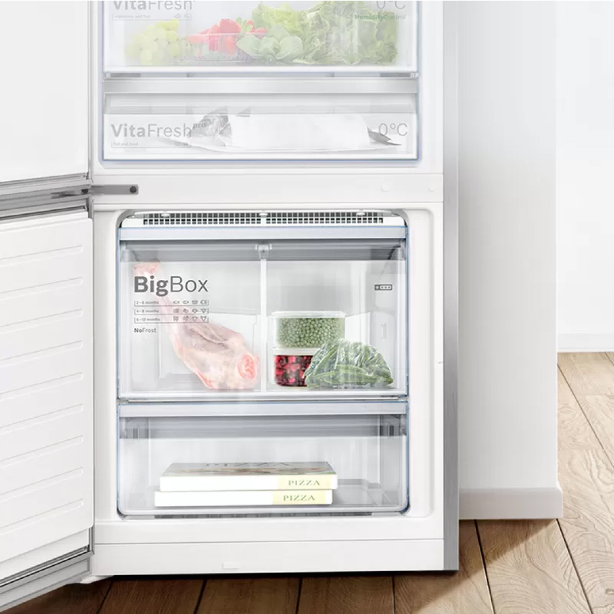

Защищает замороженные продукты от размораживания.
Когда мы кладём продукты в морозильную камеру, температура в ней
повышается, что может привести к размораживанию и потере вкуса. Функция SuperFreezing обеспечивает
быстрое
замораживание новых продуктов, предотвращая размораживание содержимого морозильной камеры.
Холодильники с
функцией автоматического замораживания возвращаются в нормальный режим работы при достижении
необходимой
температуры, предотвращая расходование энергии впустую. В результате замороженные продукты сохраняют
свой
вкус даже при добавлении новых продуктов.